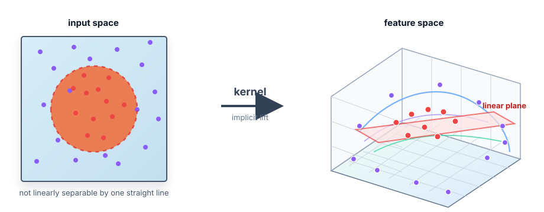
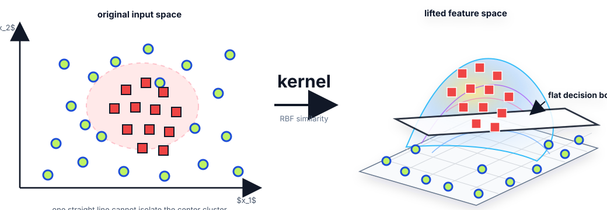

🧮 Kernel Methods核方法
🪄 Kernel Methods
Kernel methods extend the SVM dual from Lecture 7: instead of explicitly mapping data into a larger feature space, compute the inner product in that space through a kernel function.
1. Concept Understanding
A feature map $\phi(x)$ can make a nonlinear pattern linearly separable in a lifted space. Kernel methods use a function $k(x,x')$ that equals $\phi(x)^\top\phi(x')$ without explicitly building $\phi(x)$.
This solves a practical problem: the useful feature space may be huge or even infinite-dimensional, but the SVM dual only needs pairwise inner products.
The same trick applies beyond SVMs whenever an algorithm can be written using only inner products: kernel PCA, kernel ridge regression, and some density methods all reuse the same idea.
2. Plain-English Explanation
Think of a kernel as a shortcut for comparing two objects after a secret transformation. You never draw the transformed objects; you only ask, “How similar would they look after that transformation?”
For XOR, the original 2D picture is not linearly separable. After adding the interaction feature $x_1x_2$, the pattern becomes separable by a simple plane.
3. Core Intuition
The SVM dual depends on data only through $x_i^\top x_j$. If we replace $x$ by $\phi(x)$, every dot product becomes $\phi(x_i)^\top\phi(x_j)$. Kernel trick says: compute that number directly as $k(x_i,x_j)$.
Polynomial kernels add interaction features. RBF kernels measure local similarity: nearby points have large kernel values, far points have values near zero. Smaller bandwidth makes the classifier more local and more flexible.


4. Key Equations
What it does. A kernel is not just any similarity score: it must equal an inner product in some feature space, which is why it can safely replace dot products in algorithms like SVM.
What it does. A symmetric function is a valid Mercer-style kernel when every finite Gram matrix it produces is positive semidefinite. The matrix is a similarity lookup table for the training examples.
What it does. The prediction is a weighted vote from training examples. Each support vector compares itself to the test point through $k(x_i,x)$, then votes with sign $y_i$ and strength $\alpha_i$.
What it does. Kernels enter the SVM through the dual objective because the data appear only as pairwise inner products. Points with $\alpha_i>0$ are support vectors.
What it does. Expanding the power creates interaction features up to degree $d$. For $d=2$, the feature space includes constants, linear terms, squares, and pairwise products.
What it does. If two points are identical, distance is 0 and the kernel is 1. As distance grows, the exponential shrinks toward 0. Small $\sigma$ makes the shrinkage faster.
What it does. XOR is hard in the original plane because diagonal classes cannot be separated by one line. The interaction coordinate sends same-sign points to one side and opposite-sign points to the other.
What it does. For many regularized empirical-risk problems, the optimal function lives in the span of kernels centered at the training points. You do not need arbitrary functions in the whole feature space.
5. Worked Examples
Map $(x_1,x_2)$ to $(x_1,x_2,x_1x_2)$. The two points with equal signs have $x_1x_2=+1$, and the two points with opposite signs have $x_1x_2=-1$. A classifier using only the third coordinate can separate them.
For $k(x,x')=(1+x^\top x')^2$, expand the square. In 2D, the feature vector has 6 coordinates: a constant term, scaled linear terms $\sqrt2 x_i$, square terms $x_i^2$, and the scaled cross term $\sqrt2 x_1x_2$.
Given two points $x_1,x_2$, a $2\times2$ Gram matrix is just $G=\begin{bmatrix}k(x_1,x_1)&k(x_1,x_2)\\k(x_2,x_1)&k(x_2,x_2)\end{bmatrix}$. Compute the four kernel values directly; for a valid symmetric kernel, the off-diagonal entries match.
As $\sigma\to0$, the RBF term for the closest support vectors decays slowest. After factoring out the closest-distance term, all farther support-vector contributions vanish, so the prediction behaves like a weighted nearest-neighbor rule over support vectors.
6. Problem-Solving Tips
7. Common Mistakes
- Thinking a kernel always requires explicitly writing $\phi(x)$. The whole point is often to avoid it.
- Mixing the two RBF parameterizations: $\exp(-\|x-x'\|^2/(2\sigma^2))$ versus $\exp(-\gamma\|x-x'\|^2)$.
- Forgetting that not every similarity function is a valid kernel; it must correspond to a positive semidefinite Gram matrix.
- Saying kernel SVM is linear in the original input space. It is linear only after the feature map.
- Using RBF on unscaled features; the largest-scale feature will dominate Euclidean distance.
8. Exam Focus
- Explain the kernel trick from the SVM dual.
- Write polynomial and RBF kernel formulas.
- Construct small explicit feature maps, especially quadratic kernels.
- Explain the role of $\sigma$ or $\gamma$ in RBF kernels.
- Connect small-bandwidth RBF behavior to nearest-neighbor intuition.
- Compute a small Gram matrix and state why PSD matters for Mercer kernels.
- Explain why the SVM dual is the natural place to insert kernels.
9. Quick Checklist
- I can say what $k(x,x')$ represents.
- I can kernelize $f(x)=\sum_i\alpha_i y_i x_i^\top x+b$.
- I know the XOR feature map from Lecture 7.
- I can expand $(1+x^\top x')^2$ into feature coordinates.
- I can explain why small $\sigma$ makes RBF more local.
- I can identify support vectors by $\alpha_i>0$ and explain what $C$ does in soft-margin SVM.
🪄 Kernel Methods · 核方法
Kernel methods 是 Lecture 7 接在 SVM dual 后面的自然升级：不显式构造高维 feature map，只用 kernel function 直接算那个高维空间里的 inner product。
1. Concept Understanding · 概念理解
Feature map $\phi(x)$ 可以把原本 nonlinear 的图形 lift 到更高维，让它在 feature space 里 linear separable。Kernel method 用 $k(x,x')$ 表示 $\phi(x)^\top\phi(x')$，但不用真的写出 $\phi(x)$。
它解决的问题是：有用的 feature space 可能非常大，甚至 infinite-dimensional；但 SVM dual 只需要 pairwise inner products。
只要一个算法能写成只依赖 inner products，就有机会 kernelize：Kernel PCA、kernel ridge regression，以及某些 density methods 都是在复用这个想法。
2. Plain-English Explanation · 大白话理解
Kernel 就像一个“秘密变身后的相似度计算器”。你不用把点真的变身到高维，只问：如果变身之后，这两个点有多像？
对 XOR 来说，原始二维图怎么画直线都分不开；加上 $x_1x_2$ 这个 interaction feature 后，对角关系立刻变成一刀能切开的结构。
3. Core Intuition · 核心直觉
SVM dual 中数据只通过 $x_i^\top x_j$ 出现。若把 $x$ 换成 $\phi(x)$，所有 dot product 都变成 $\phi(x_i)^\top\phi(x_j)$。Kernel trick 就是直接用 $k(x_i,x_j)$ 代替这个数。
Polynomial kernel 会加入 interaction features；RBF kernel 更像 local similarity：距离近 kernel 大，距离远 kernel 接近 0。Bandwidth 越小，边界越局部、越灵活。
4. Key Equations · 核心公式
这个公式在做什么？ Kernel 不是随便一个相似度；它必须等于某个 feature space 里的 inner product，所以才能安全替换 SVM 里的 dot product。
这个公式在做什么？ 一个 symmetric function 要成为 valid Mercer-style kernel，需要它对任意有限样本生成的 Gram matrix 都是 PSD。这个矩阵就是训练样本之间的 similarity lookup table。
这个公式在做什么？ Prediction 是 training examples 的 weighted vote。每个 support vector 通过 $k(x_i,x)$ 和 test point 比相似度，再用 $y_i$ 给方向、$\alpha_i$ 给权重。
这个公式在做什么？ Kernel 会进入 SVM dual objective，因为数据只通过 pairwise inner products 出现。$\alpha_i>0$ 的点就是 support vectors。
这个公式在做什么？ 展开幂次后，会出现最高到 degree $d$ 的 interaction features。$d=2$ 时有常数、线性项、平方项和 pairwise products。
这个公式在做什么？ 两点完全相同距离为 0，kernel = 1；距离越远，kernel 越接近 0。$\sigma$ 越小，衰减越快。
这个公式在做什么？ XOR 在原平面不能一条直线分开，因为类别在对角线上；interaction coordinate 会把同号点和异号点送到不同侧。
这个公式在做什么？ 很多 regularized empirical-risk 问题的最优函数，都可以写成以 training points 为中心的 kernels 的线性组合。你不需要在整个 feature space 里随便找函数。
5. Worked Examples · 代表性例题
把 $(x_1,x_2)$ 映射成 $(x_1,x_2,x_1x_2)$。同号点的 $x_1x_2=+1$，异号点的 $x_1x_2=-1$。只看第三个坐标就能线性分开。
对 $k(x,x')=(1+x^\top x')^2$ 展开。2D 时 $\phi(x)$ 有 6 个坐标：常数项、$\sqrt2 x_i$ 线性项、$x_i^2$ 平方项，以及 $\sqrt2 x_1x_2$ cross term。
给两个点 $x_1,x_2$ 时，$2\times2$ Gram matrix 就是 $G=\begin{bmatrix}k(x_1,x_1)&k(x_1,x_2)\\k(x_2,x_1)&k(x_2,x_2)\end{bmatrix}$。直接算四个 kernel values；对 valid symmetric kernel，两个 off-diagonal entries 应该相等。
当 $\sigma\to0$，离测试点最近的 support vectors 衰减最慢。把最近距离那一项提出后，更远的 support vectors 都趋近 0，所以 prediction 近似只看最近 support vectors 的加权标签。
6. Problem-Solving Tips · 解题技巧
7. Common Mistakes · 常见错误
- 以为 kernel 一定要显式写出 $\phi(x)$；很多时候它就是为了避免显式写。
- 混淆 RBF 两种参数：$\exp(-\|x-x'\|^2/(2\sigma^2))$ 和 $\exp(-\gamma\|x-x'\|^2)$。
- 忘记不是所有 similarity function 都是 valid kernel；对应的 Gram matrix 要 positive semidefinite。
- 说 kernel SVM 在原空间是 linear；它只是在 feature space 里 linear。
- RBF 前不 scale features；尺度最大的 feature 会主导 Euclidean distance。
8. Exam Focus · 考试重点
- 能从 SVM dual 解释 kernel trick。
- 会写 polynomial kernel 和 RBF kernel。
- 会构造小型 explicit feature map，尤其 quadratic kernel。
- 能解释 RBF 里 $\sigma$ 或 $\gamma$ 的作用。
- 能把 small-bandwidth RBF 和 nearest-neighbor intuition 连起来。
- 会计算小型 Gram matrix，并说明 PSD 对 Mercer kernels 的意义。
- 能解释为什么 SVM dual 是插入 kernels 的自然位置。
9. Quick Checklist · 速记清单
- 我知道 $k(x,x')$ 代表什么。
- 我能把 $f(x)=\sum_i\alpha_i y_i x_i^\top x+b$ kernelize。
- 我记得 Lecture 7 的 XOR feature map。
- 我能展开 $(1+x^\top x')^2$ 找 feature coordinates。
- 我能解释为什么 $\sigma$ 小会让 RBF 更 local。
- 我能用 $\alpha_i>0$ 识别 support vectors，并解释 soft-margin SVM 里 $C$ 的作用。